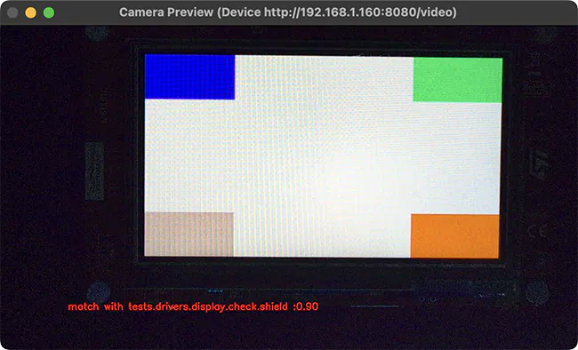

显示捕获
display_capture harness 通过摄像头捕获并分析显示输出，用于验证显示驱动的功能。它与 pytest 集成，借助视频指纹实现自动化视觉测试。

硬件配置
显示捕获 harness 需要：
兼容 UVC 的摄像头，至少 200 万像素（例如 1080p 分辨率）
遮光罩或黑色幕布，以确保光照条件一致
连接了摄像头、用于捕获显示输出的 PC 主机
连接到同一台 PC 的 DUT，用于烧录和访问串口控制台
配置
该 harness 使用一个 YAML 配置文件，其中定义了摄像头设置、测试参数和视频签名分析选项。典型配置如下：
case_config:
device_id: 0
res_x: 1280
res_y: 720
fps: 30
run_time: 20
test:
timeout: 30
prompt: "screen starts"
expect: ["tests.drivers.display.check.shield"]
plugins:
- name: signature
module: plugins.signature_plugin
class: VideoSignaturePlugin
status: enable
config:
operations: "compare" # or "generate"
metadata:
name: "tests.drivers.display.check.shield"
platform: "frdm_mcxn947"
directory: "./fingerprints"
duration: 100
method: "combined"
threshold: 0.65
phash_weight: 0.35
dhash_weight: 0.25
histogram_weight: 0.2
edge_ratio_weight: 0.1
gradient_hist_weight: 0.1
case_config- 该部分定义通用的摄像头设置和测试时长。device_id- 摄像头设备 ID（默认为 0）。可以是任何有效的 OpenCV 摄像头标识符，包括：表示本地摄像头的整数（0 表示第一个摄像头，1 表示第二个，依此类推）。
设备路径字符串，例如 Linux 上的
/dev/video0。用于网络摄像头的 IP 视频流 URL，例如
rtsp://192.168.1.100:8554/stream。
res_x- 摄像头的水平分辨率（整数，默认为 1280）。res_y- 摄像头的垂直分辨率（整数，默认为 720）。fps- 摄像头的帧率（整数，默认为 30）。run_time- 测试时长，单位为秒（整数，默认为 20）。
test- 该部分包含与设备交互的测试配置。timeout- 等待设备 UART 输出中出现提示符的最长时间，单位为秒（整数，默认为 30）。prompt- 开始显示捕获之前，在设备 UART 输出中等待的字符串模式。可以是正则表达式（字符串，默认为uart:~$）。expect- 预期测试结果字符串列表，必须与应用程序返回的结果相匹配。如果捕获的结果与该列表匹配，则测试通过（字符串列表，默认为['PASS']）。
plugins- 该部分包含处理摄像头帧的插件的配置。目前只支持VideoSignaturePlugin插件，它接受以下配置选项：operations- 运行测试时要执行的操作（字符串）。必须设为generate（捕获指纹）或compare（将捕获的指纹与参考指纹进行比较）。metadata- 用于识别指纹的元数据信息（可选）。name- 测试用例名称标识符（字符串）。platform- 目标平台标识符（字符串）。
directory- 存放指纹的目录（字符串，默认为./fingerprints）。duration- 要分析的帧数（整数）。帧数越多耗时越长，但生成的指纹越准确。method- 生成显示指纹的方法（字符串，默认为combined）。必须设为以下值之一：phash、dhash、histogram或combined。phash（感知哈希）捕获整体的视觉结构和布局。最适合检测较大的渲染问题，例如 UI 元素位置错误。
dhash（差异哈希）检测亮度模式和渐变。对对比度变化敏感，例如亮度或对比度问题。
histogram（颜色直方图）分析颜色分布。能快速检测明显的颜色问题，例如颜色互换的错误。
combined（推荐方法）将所有方法加权组合（参见下文的
method_weight选项），以实现稳健的比较。能够均衡地检测明显和细微的视觉问题。
threshold- 相似度得分阈值，高于该值即认为参考指纹与捕获的指纹相匹配（可选浮点数，默认为 0.65）。phash_weight- phash 方法的权重（可选浮点数，默认为 0.35）dhash_weight- dhash 方法的权重（可选浮点数，默认为 0.25）histogram_weight- histogram 方法的权重（可选浮点数，默认为 0.2）gradient_hist_weight- 梯度直方图方法的权重（可选浮点数，默认为 0.1）edge_ratio_weight- 边缘比例方法的权重（可选浮点数，默认为 0.1）
配置文件路径在测试的 testcase.yaml 中通过 harness 配置选项 display_capture_config 指定，并使用 DISPLAY_TEST_DIR 环境变量：
harness: display_capture
harness_config:
pytest_dut_scope: session
fixture: fixture_display
display_capture_config: "${DISPLAY_TEST_DIR}/display_config.yaml"
工作流程
首先，为已知正确的显示输出生成 参考指纹：
# Build and flash the display test
west build -b <board> tests/drivers/display/display_check
west flash
# Configure for fingerprint generation mode by setting the 'operations' field to 'generate'
# in the configuration file.
# Generate fingerprints
export DISPLAY_TEST_DIR=<path-to-config-directory>
west twister --device-testing --hardware-map map.yml \
-T tests/drivers/display/display_check/
指纹存放在配置文件 directory 字段所指定的目录中，并按配置文件 metadata 字段中定义的测试名称和平台进行组织。
生成指纹后，可以再次运行测试，这次使用 比较模式：
# Set the 'operations' field to 'compare' in the configuration file.
export DISPLAY_TEST_DIR=<path-to-fingerprints-parent-directory>
west twister --device-testing --hardware-map map.yml \
-T tests/drivers/display/display_check/
该 harness 使用配置的签名方法和阈值，将捕获的视频与参考指纹进行比较。如果参考指纹与捕获指纹之间的相似度得分超过配置的 threshold，则测试通过。
备注
DUT 的
testcase.yaml中的测试名称必须与指纹元数据配置中的name字段一致。一个目录中可以存放多个指纹以进行全面验证，但这会增加比较时间。
指纹同时与测试场景和平台相关。